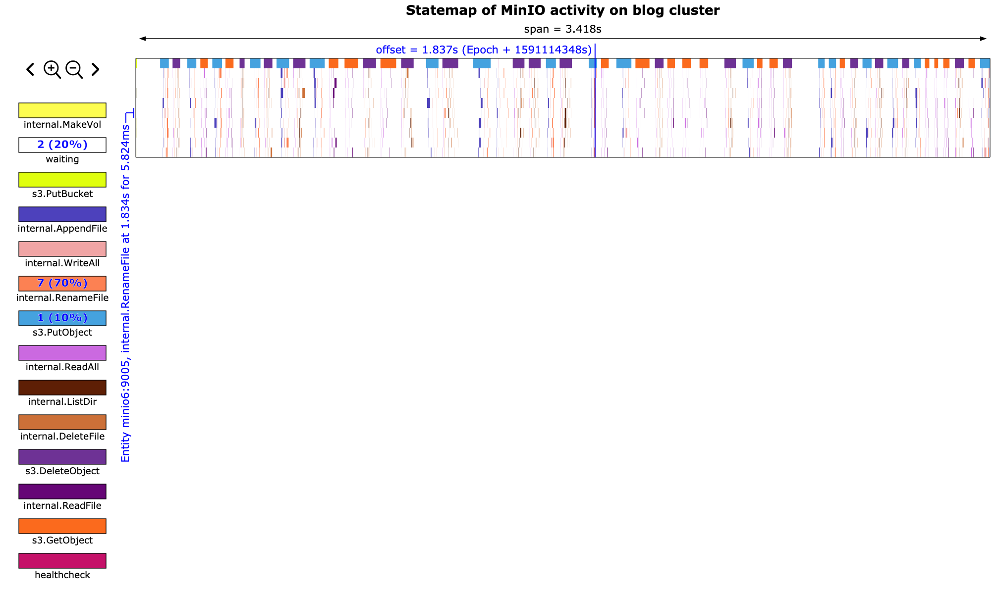

Tracing MinIO and rust-statemap
2020-06-02
MinIO is a neat little program. I initially thought that MinIO was just a broker that could provide an S3 API to front another object storage system. However, MinIO can do a lot more than this.
There are currently two interesting modes of operation for MinIO. The first is as a gateway, which acts like I described previously. It layers an S3 API on top of another object storage system. The 'backend' system could be Manta, Google Cloud Storage, Azure Blob Storage, S3 itself, or any other system. You could even implement a WebDAV backend or local filesystem backend if you wanted to.
The second interesting mode of operation has MinIO act as a distributed object storage system. MinIO itself is the backend storage in this model. MinIO can use erasure coding to store files in a durable and inexpensive manner across multiple machines, possibly in different availability zones.
We were considering using MinIO as the storage tier for Manta to reduce the cost of storing data while maintaining acceptable durability characteristics. This would have been an alternative to an iSCSI + ZFS layered architecture. Details are described in RFD-181. Other software companies also use MinIO as part of their larger object storage systems. Nutanix is one of the more recent groups to announce they are using MinIO in their system.
Although we ended up not choosing to pursue MinIO we did learn a lot about it along the way. We also wrote and extended a couple pretty cool tools to help us use MinIO. I'll describe these here.
Chum
I wrote about manta-chum in the past. It's a tool that we wrote to test the Manta storage tier when we found existing tools like fio and COSbench were insufficient.
We extended manta-chum to support the S3 protocol. Unfortunately the S3 protocol is heavy even from the perspective of a client, so we chose to use a heavy Rust AWS API library rather than writing our own minimal client.
Using manta-chum with MinIO allowed us to use the same tool to benchmark all of our possible storage tier configurations using the same software. This is really important to us so that we know that the load gen tool is following the same logic across all target configurations. Plus, manta-chum has tabular output and we already had a number of gnuplot knowledge we could transfer from the local filesystem and WebDAV testing we performed earlier.
The new mode can be invoked like this:
$ ./chum -t s3:localhost -w r,w,d -s 10
See the repo for more information.
MinIO trace data
When we started looking at MinIO we found some performance problems. Latency was high and we weren't sure why. We were wondering what each MinIO instance was doing at any given time. Luckily we discovered MinIO's tracing utilities.
MinIO has a pretty nice distributed tracing facility built-in. Although the data is nice, it's impossible to consume without additional tools. Here's what the data looks like, in JSON form:
$ mc admin trace -a --json min0 | tee my_trace
[...]
{
"host": "localhost:9000",
"time": "2020-06-02T16:12:29.745192997Z",
"client": "172.19.0.1",
"callStats": {
"rx": 262234,
"tx": 263,
"duration": 39692427,
"timeToFirstByte": 0
},
"api": "s3.PutObject",
"path": "/chum/v2/chum/ae/ae8ae9bf-9785-4fdf-bb62-abdd7e60f377",
"query": "",
"statusCode": 200,
"statusMsg": "OK"
}
That snippet shows a top-level operation, s3.PutObject. We also get
trace data for each individual internal cluster API operation, like when one
node tells another node to create or delete a file.
minio-statemap
I really enjoy using the statemap tool that Bryan wrote when he was at Joyent. We decided to write some software to convert the MinIO trace data to the statemap input format so we can generate statemaps of a MinIO cluster. This seemed like pretty novel stuff at the time since to date most of our statemap data sources have been DTrace scripts.
minio-statemap was born! This tool takes the above trace data and converts it into per-node states that look like this:
$ ./minio-statemap -i ./my_trace -c "blog cluster" > minio_states
[...]
{"time":"147181850","entity":"localhost:9000","state":10,"tag":null}
Creating statemap metadata and ensuring an entity doesn't 'go back in time' is also handled.
Now we can generate a statemap using the usual statemap workflow:
$ statemap minio_states > minio.svg
rust-statemap
After hacking together minio-statemap it was abundantly clear that we needed a convenient wrapper for the statemap API. Manually setting up statemap structs and ensuring all of the statemap rules were followed was very messy.
We wrote a rust module that helps developers create statemaps. This can be used out-of-band like we did with minio-statemap, or in the hot path. We use the hot-path method in manta-chum, which I may write about later.
Regardless, rust-statemap was built to provide a simple API for creating statemaps. In my opinion this should be moved into the statemap repository instead of being maintained as a separate tool. Some explanation of my thoughts on this are at the end of the README.
After we had rust-statemap we were able to refactor minio-statemap to remove all of this confusing logic.
Results
At the end of the day we get a statemap that looks like this:

We can zoom in and see the exact internal API calls that make up each top-level API call. This will also show us how long each API call takes and how much time is wasted between calls.

This tool has been incredibly helpful for us. Using minio-statemap we were able to trim out a lot of unnecessary work from the extremely chatty MinIO protocol.
A full MinIO statemap SVG can be found in the minio-statemap repository.